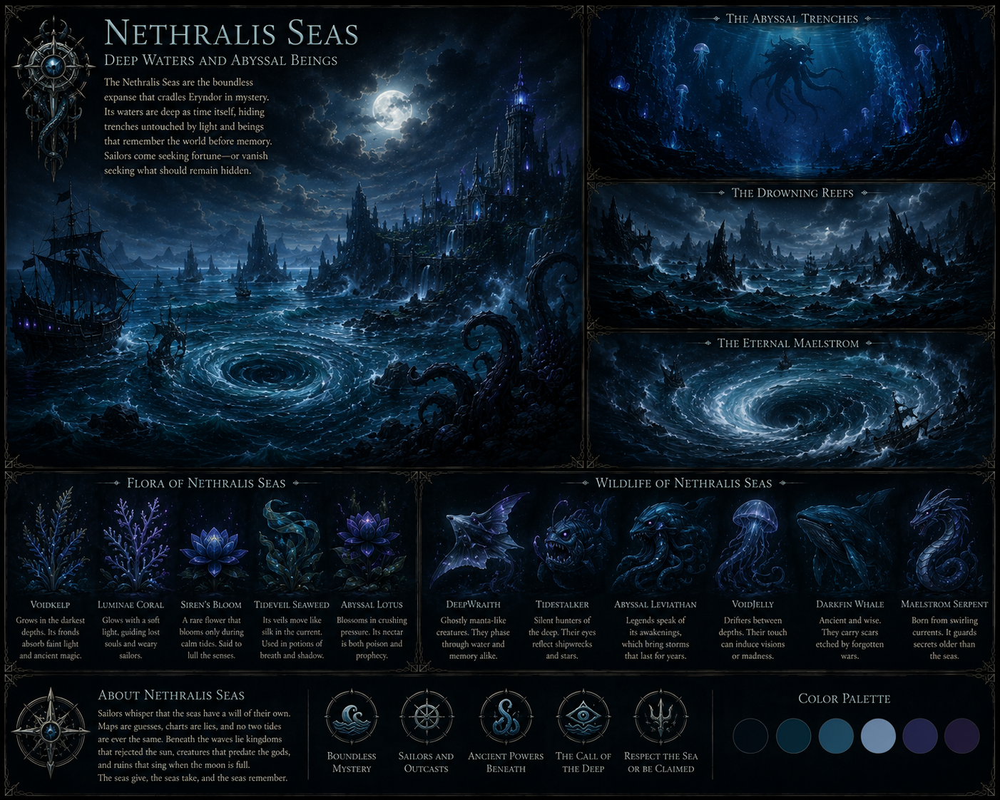
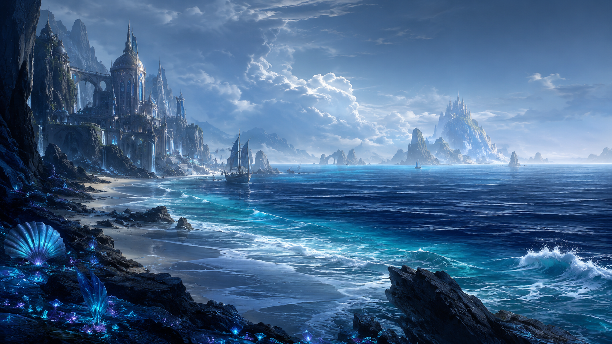
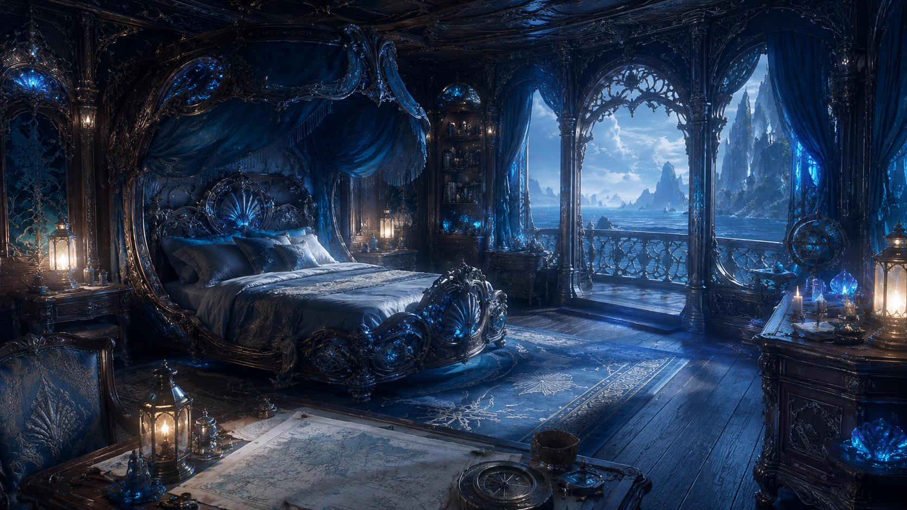
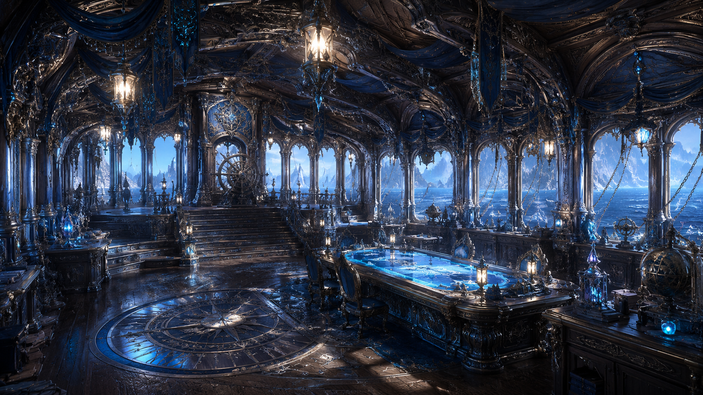
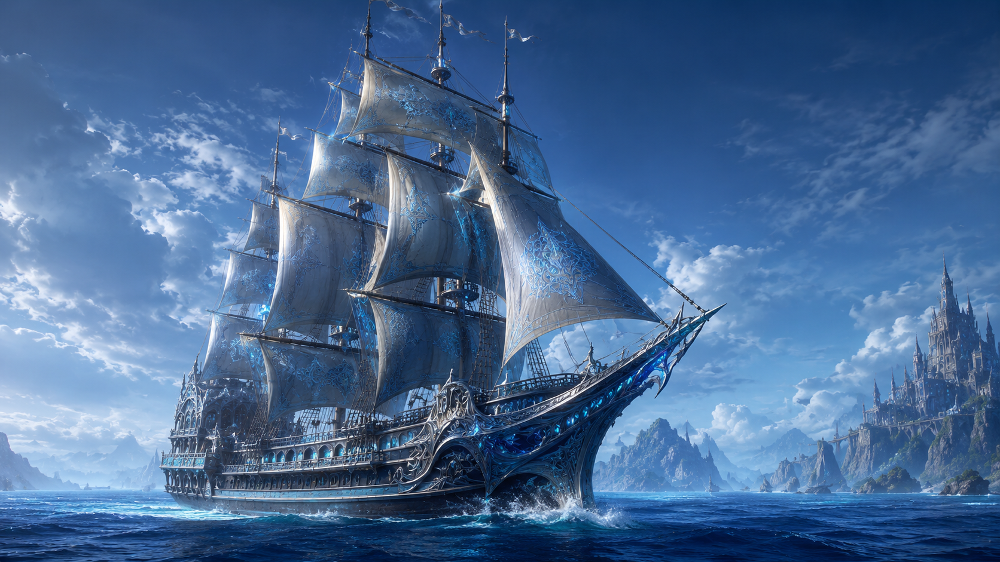
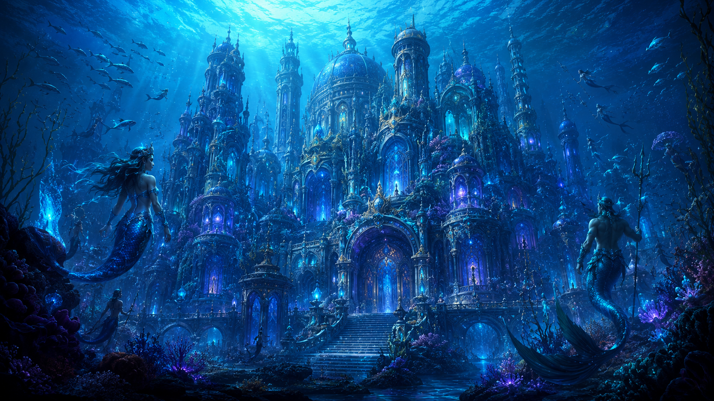
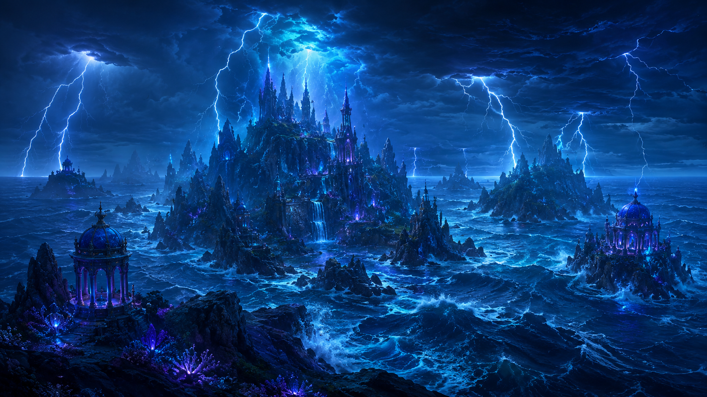
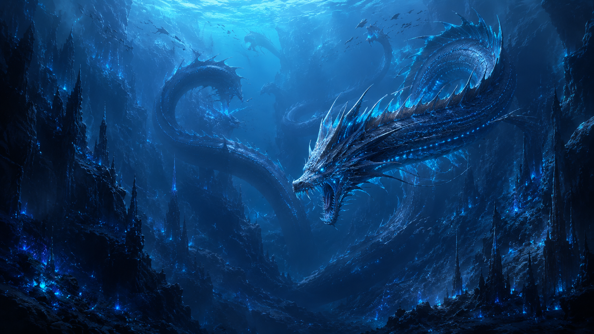
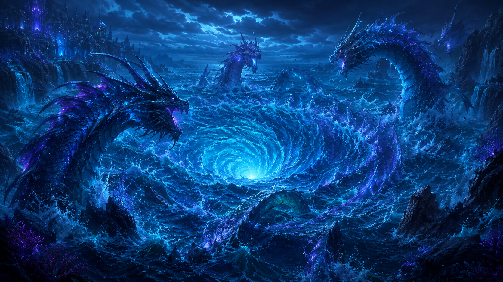
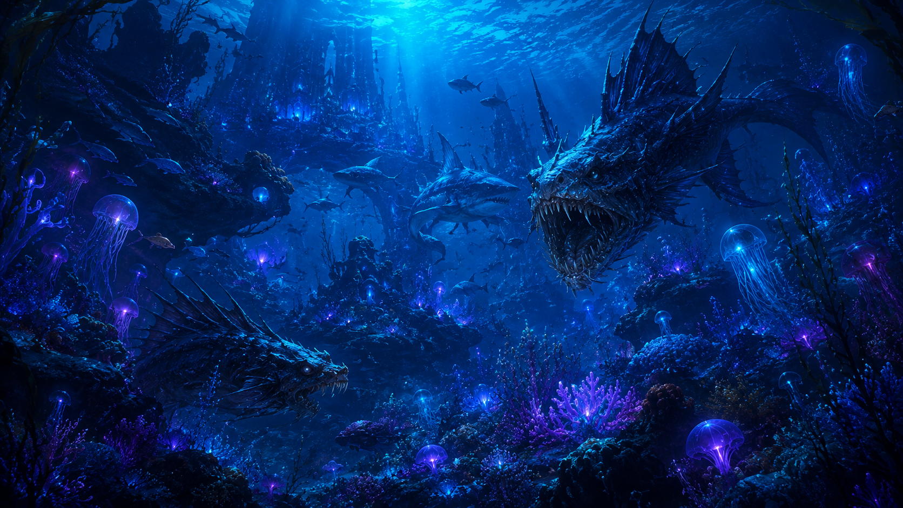

A vast maritime realm of deep oceans, ancient ships, submerged kingdoms and colossal creatures hidden beneath the darkest waters of Eryndor.
Discover NethralisNethralis is a nation defined more by the ocean than by dry land. Its territory stretches across deep waters, storm-covered islands and underwater regions where entire civilizations have developed far beneath the surface.
Thalassyr lies beneath the sea, surrounded by reefs, aquatic vegetation and structures designed for Merfolk, Tritons and other Sea-Born inhabitants. Human settlements and ships remain closer to the surface, creating two worlds that are different but permanently connected through trade, travel and the ocean itself.
The Tide Council governs these communities while the Deepwater Fleet protects the routes between them. Water, storm and abyssal magic have become essential parts of Nethralis culture, especially when navigating the violent weather and dangerous currents that surround much of the region.
Below the waves, the environment becomes increasingly wild. Luminous coral, enormous kelp forests and colorful reefs are home to countless marine species, but the deeper waters belong to sea serpents, giant predators and ancient marine dragons. Vortices, underwater trenches and violent storms have kept many parts of Nethralis unexplored even by its own people.

Thalassyr
The Tide Council
Humans, Merfolk, Tritons and Sea-Born
Water, Storm and Abyssal Magic
Humid, Stormy and Oceanic
The Deepwater Fleet








